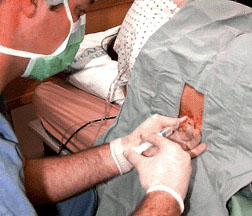

|

The needle is advanced with the nondominant hand while the dominant hand exerts continuous pressure on the plunger of the "loss of resistance" syringe. The dorsal surface of the nondominant hand rests against the patient's back to prevent sudden movements of the needle. |